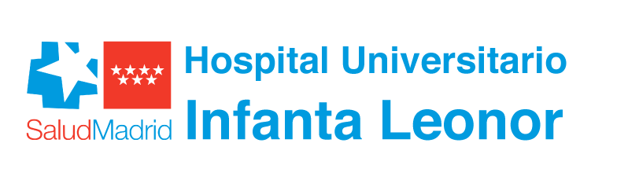

De la pregunta al borrador. Cinco pasos; cada cifra, a su fuente.
El primer mapa del tema.
Todavía no es una fuente para citar.
¿De dónde sale cada cifra?
¿Qué fuerza tiene la evidencia?
Sigue las citas.
Guarda los originales.
Contrasta las cifras.
Redacta con referencias.
Comprueba el DOI,
el dato y la página.
Ninguna herramienta lo hace todo bien.
Recoge, contrasta y comprueba.
≥ 70 años ingresados en planta médica o quirúrgica.
Orientación, movilización precoz, sueño, hidratación, gafas y audífonos (tipo HELP).
Atención habitual.
Incidencia de delirium, caídas, estancia e institucionalización.